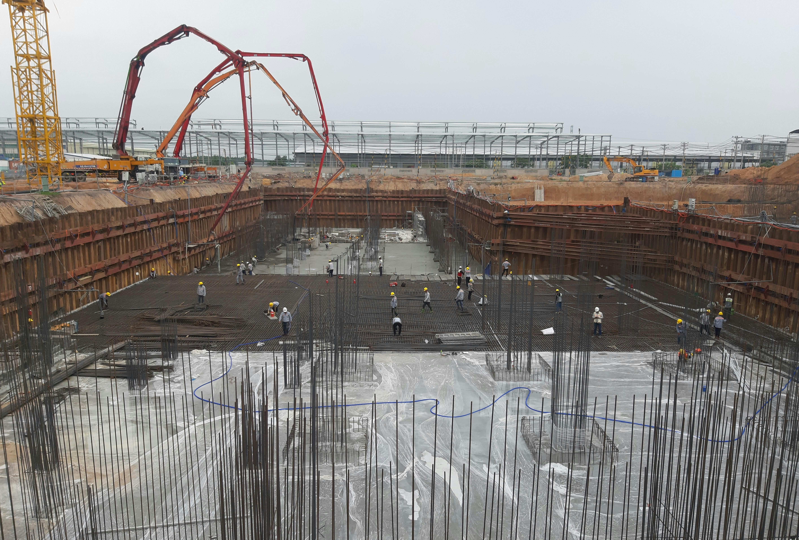
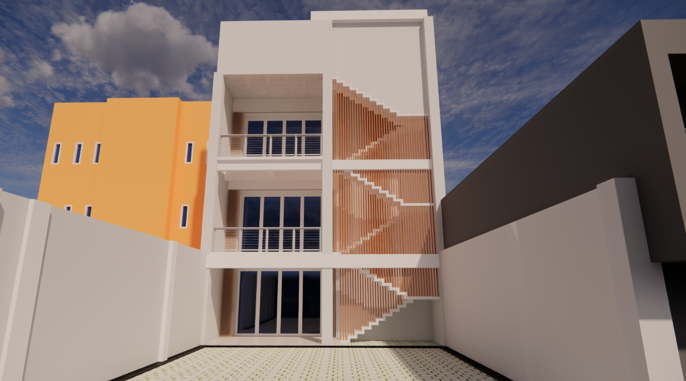

BLOGS & CASE STUDY
Dokumentasi project, analisis, dan pembelajaran selama proses magang dan pengembangan skill teknik sipil.
Edukasi Teknik Sipil

Apa Itu Struktur Beton Bertulang?
Panduan lengkap untuk pemula dalam memahami struktur beton bertulang, mulai dari konsep dasar hingga aplikasi praktis.
View Case StudyBIM & Digital Engineering

Penerapan BIM pada Perencanaan Gedung Tower UNIDHA
Studi kasus penggunaan BIM dalam proyek konstruksi Tower UNIDHA dengan fokus analisis kondisi awal, workflow pekerjaan, dan pembelajaran lapangan.
View Case StudyMagangHub Portofolio

Civil Engineer - PT Era Bangun Jaya
Portofolio pengalaman magang sebagai Civil Engineer di PT Era Bangun Jaya, termasuk proyek yang dikerjakan, keterampilan yang dikembangkan, dan pembelajaran yang diperoleh selama magang.
View Case StudyConstruction & Engineering

Studi Kasus Renovasi Ruko: Dari Konsep hingga Visualisasi
Studi kasus renovasi bangunan existing dengan fokus analisis kondisi awal, workflow pekerjaan, dan pembelajaran lapangan.
View Case Study